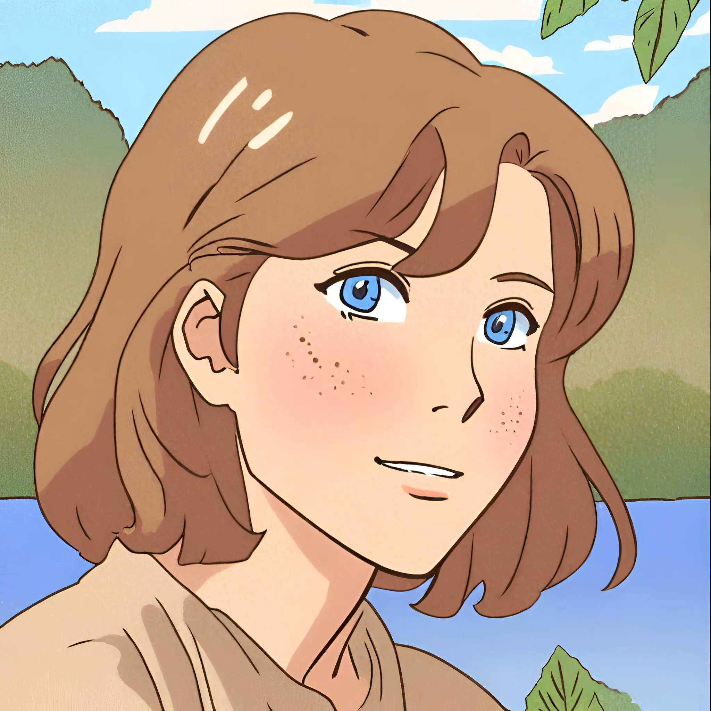
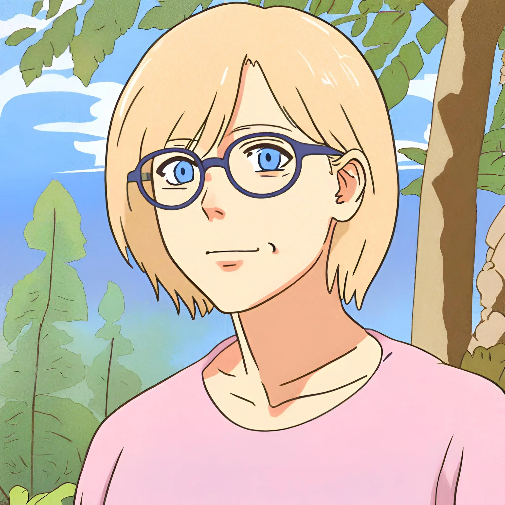
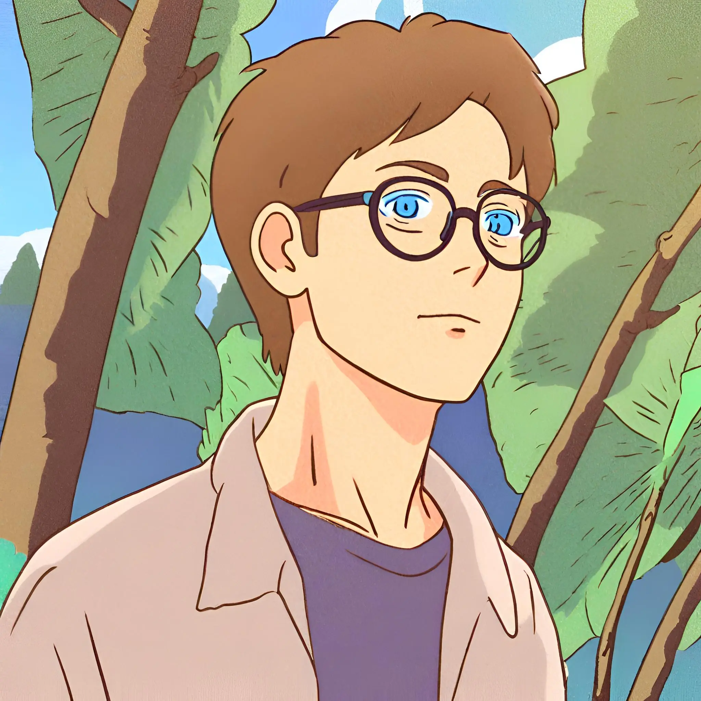
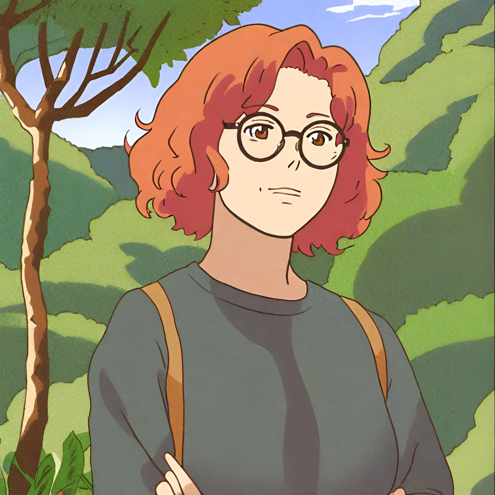
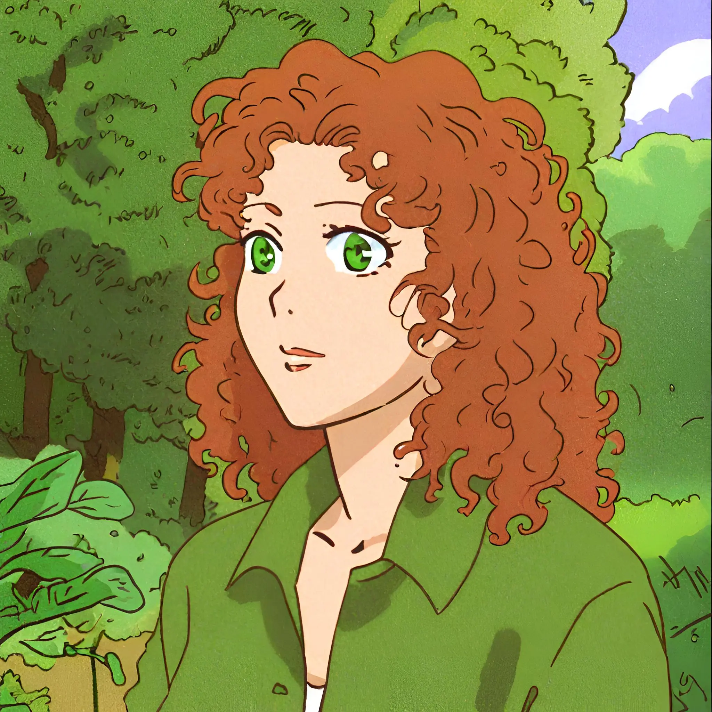

Nous sommes cinq étudiants en dernière année de Master en Sciences de l’Éducation, option apprentissage en milieu scolaire, à l’Université Catholique de Louvain.

Maude propose une activité scientifique
Je suis institutrice primaire depuis 14 ans dans une école du Brabant Wallon. Mon parcours m'a conduite à explorer toutes les années du primaire. Cette année, je me consacre aux élèves de 1e et 2e années.
Mon école, située dans un écrin de verdure, est surnommée la « petite école des bois ». Je profite de ce cadre pour intégrer la nature dans ma pédagogie et pratique donc l’école du dehors, pédagogie pour laquelle j’ai suivi une formation. Par ailleurs, grâce au plan "École numérique", chaque classe est équipée de tablettes, d'ordinateurs portables et de tableaux interactifs.
Par la conception de ce site, j’ai été ainsi amenée à fusionner ces deux mondes, en intégrant l'IA et l'outil numérique dans mon enseignement en plein air.

Céline propose une activité de construction de cabane dans la nature
Je m’appelle Céline, et je suis institutrice dans l’enseignement spécialisé. Depuis quelques années, je guide mes jeunes explorateurs à travers l'école du dehors. Que ce soit en forêt, dans la campagne avoisinante de l’école ou dans la cour de récréation, les occasions sont nombreuses d’apprendre dehors.
Passionnée également par le monde digital, j'intègre les médias et les technologies numériques dans notre quête de savoir. Mes élèves, petits mais curieux, sont fascinés tant par les mystères de la forêt que par la magie des outils numériques. Créer ce site web est pour moi l'opportunité rêvée d’associer les apprentissages du dehors et l'innovation technologique.

Robin propose une activé en français
Jeune et enthousiaste, je suis professeur de français depuis 5 ans dans le degré inférieur. J’ai intégré l’équipe un peu tardivement mais je fais preuve d’originalité et d'engagement auprès des enfants.
Amateur de science-fiction et de nature, j’essaie de combiner les deux en proposant des ateliers de création. Ces ateliers se veulent libérés et collectifs puisqu’ils exploitent l’ensemble des outils et des possibles futurs, tout en respectant l’harmonie du groupe et de la nature.
Dès lors, je pousse les enfants à renouveler la dynamique des « récits collectifs autour du feu». En quelques heures et clics, j’amène les enfants à mettre en forme numériquement leur inspiration et à donner vie à des récits surprenants. L’obscurité n’a qu’à bien se tenir, leur récit tiendra le feu vivant et les soirées de vos enfants passionnantes !

Julie propose une activité sensorielle et de bien-être
e suis Julie, institutrice primaire depuis une dizaine d’années et psychopédagogue en devenir. Je suis accro à la nature et à la créativité. J’ai implanté la pratique “Tous dehors” au sein de mon école et tout le monde y a pris goût, de la maternelle au primaire. Je suis particulièrement attentive à l’épanouissement de chaque élève en tenant compte de son folklore local. D’ailleurs, qui n’en a pas !
En ce qui concerne le numérique, le monde nous plonge dans la nécessité de gérer les compétences en lien avec la gestion des technologies d’informations. Donc, joignons l’utile, le nécessaire et l’agréable en faisant le pont entre deux dimensions éloignées : nature et numérique !

Hélène propose une activité artistique
Je suis professeur d’éducation plastique dans l’enseignement spécialisé secondaire à Bruxelles depuis 18 ans. J’ai découvert le concept d’école du dehors l’année dernière lorsque je l’ai exploité pour le stage du B1. J’enseigne à des élèves porteurs de handicaps mentaux et je tente de les emmener le plus souvent possible dans la forêt de Soignes toute proche.
Je constate que ce bain de nature leur fait le plus grand bien. Ils sont stimulés par tout ce qui se trouve dans leur environnement, les bruits, les odeurs, les textures... L’utilisation de l’outil numérique (appareil photo, tablette connectée…) est un atout quand il s’agit de prendre des photos, reconnaître un animal, une plante...
Nos rôles dans la conception du site
La conception de ce micro-site est le résultat d'une collaboration complète. Nous avons eu à cœur de construire un site qui ressemble à la dynamique de notre équipe. La thématique du dehors, la structure du site, la définition de la charte graphique, les textes, le volet réflexif..., sont le produit de discussions communes de Céline, Robin, Hélène, Maude et Julie.
Chacun a apporté ses expériences personnelles, professionnelles et numériques. La conception graphique a été soutenue par les talents artistiques d'Hélène, de Maude et de Julie. La structure pédagogique en lien avec les 4 axes de la pédagogie du dehors (ASBL Hypothèses) a été apportée et élaborée par Céline, Robin et Hélène. L'expérience professionnelle de Maude, Julie et Céline concernant des activités pédagogique en extérieur ont soutenu la production des séquences pédagogiques. Chaque membre de l'équipe a réalisé une séquence pédagogique. Les compétences et l'expérience numériques de Céline, Julie et Robin ont soutenu le lancement de toute l'équipe dans l'usage de l'intelligence artificielle pour la production d'images, de canevas de séquence pédagogique, du logo, de synthèses en lien avec le contenu pédagogique... Mais également dans l'insertion d'applications numériques et de plateformes internet au sein des séquences pédagogiques.
Robin a créé la séquence "La chanson autour du feu".
Maude a créé la séquence "À la découverte des arbres et de leurs feuilles".
Hélène a créé La séquence "Film en stop motion avec des éléments de la nature".
Céline a créé la séquence "Construire une cabane".
Julie a créé la séquence "Le bien-être et les émotions".
L'équipe de l'école branchée sur la nature.